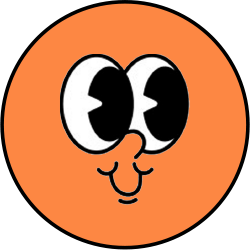

<nav class="navbar bg-light fixed-top">
	<div class="container-fluid">
		<a class="navbar-brand" href="#">
			
		</a>
		<button class="navbar-toggler" type="button" data-bs-toggle="offcanvas" data-bs-target="#offcanvasNavbar" aria-controls="offcanvasNavbar">
		<span class="navbar-toggler-icon"></span>
		</button>
		<div class="offcanvas offcanvas-end" tabindex="-1" id="offcanvasNavbar" aria-labelledby="offcanvasNavbarLabel">
			<div class="offcanvas-header">
				<h5 class="offcanvas-title" id="offcanvasNavbarLabel">Offcanvas</h5>
				<button type="button" class="btn-close" data-bs-dismiss="offcanvas" aria-label="Close"></button>
			</div>
		
			<div class="offcanvas-body">
			<!-- Display items in offcanvas if the currentPage is not 'home' -->
			<ul *ngIf="currentUrl !== 'home'" class="navbar-nav justify-content-end flex-grow-1 pe-3">
				<li class="nav-item">
					<a class="nav-link active" aria-current="page" href="/home">Home</a>
				</li>
				<!-- Add other navbar items as needed -->
			</ul>
	
			<!-- Display items in navbar if the currentPage is 'home' -->
			<ul *ngIf="currentUrl === 'home'" class="navbar-nav justify-content-end flex-grow-1 pe-3">
				<li class="nav-item">
				<a class="nav-link active" aria-current="page" href="/game">Game</a>
				</li>
				<li class="nav-item">
				<a class="nav-link" href="/user">Profile</a>
				</li>
				<li class="nav-item">
				<a class="nav-link" href="/settings">Settings</a>
				</li>
				<!-- Add other offcanvas items as needed -->
			</ul>
			</div>
		</div>
	</div>
</nav>
